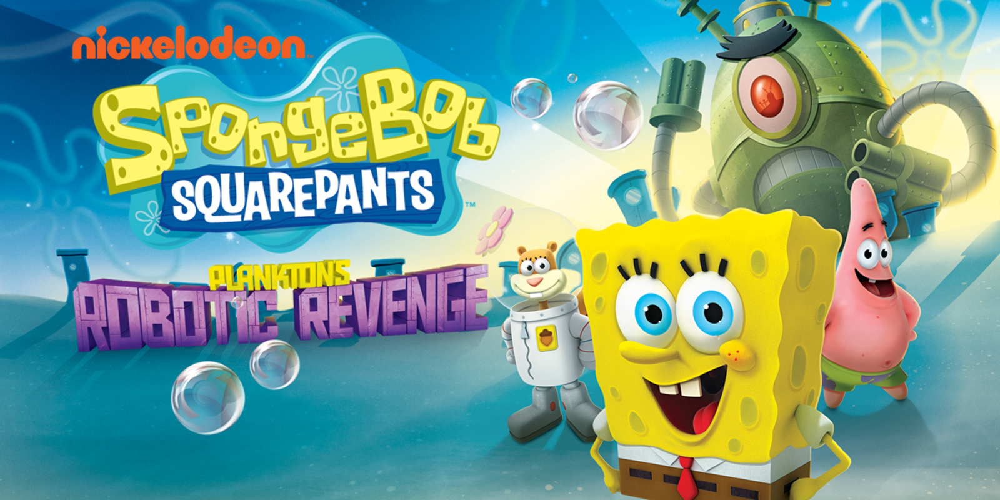
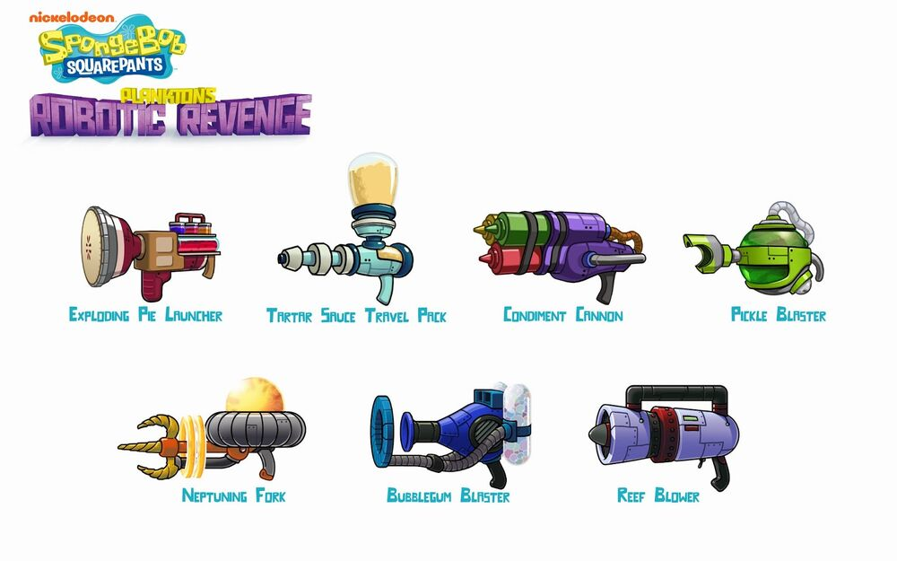

So when I got my Wii U in October 2024 I was fiddling around with NUSspli and downloaded a handful of Nintendo titles and tried looking for other third party titles to compensate for it. Galaga, no, Tetris, no, Pac-Man, we don't talk about that, and SpongeBob. I saw a familiar looking title that I saw back on the Xbox 360 Games Store in 2022.
It was Plankton's Robotic Revenge! Ok enough of that, it is game time! The game starts off with Plankton's robots, no not that one time, this time it's different. Plankton and his cousins occupy big machines to go search for the keys that lead to the formula's safe.
I then saw a weapon menu, there was a bunch of unique weapons! (and I only used three of them) This game's content is based massively on destroying robots. Destroying a lot of things, actually. There are a lot of big enemies later on that make the game a bit more challenging, but Neptune forbid entertaining.
The robots go from simple little thing that don't do anything, ones that do, ones that really do, and really big ones that team up with the little ones to make the gameplay difficult. This happens right after the first world of this game.
Collectibles in this game can be obtained by smashing stuff, the health really like to be placed whenever I don't need it. I rarely use the Sprockets most of the time when playing, as I only use two and the only time I did use them was to buy every weapon and all of their upgrades.
At the end of every world, you'll find a big Plankton boss that'll attack in an assortment of moves. I cheese'd through a lot of it with a special tartar sauce gun that locked on to enemies.
Another thing is that the dialog in this game will also get repetitive. And with the bosses, I must say one of their voicelines sound like they were recorded by an actual hillbilliy's house.
Remember how I said I only used three weapons? The default one and the Tartar Sauce shooter were the only ones that really mattered. Everything else was just there, kind of like this game.
Speaking of, I thought this game was special because it was released on Wii U. I then learned that they released it for practically anything that had a screen and called it a day.
So it's licensed shovelware, granted I do like some shovelware titles but this was just a waste of hard drive space.
Meow!
Now that the blog is over, I have a fun fact to share. I write a lot of my blogs first in Google Keep and I looked at my screen time right now and saw that it took 25 minutes to write this article. That's longer than the entire game! I'm kidding but that shows how there is barely any content to talk about.